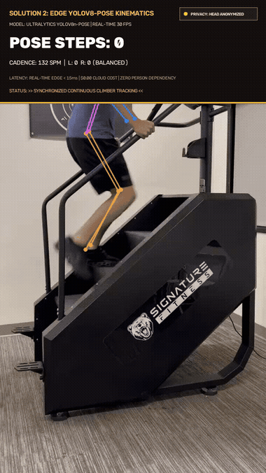
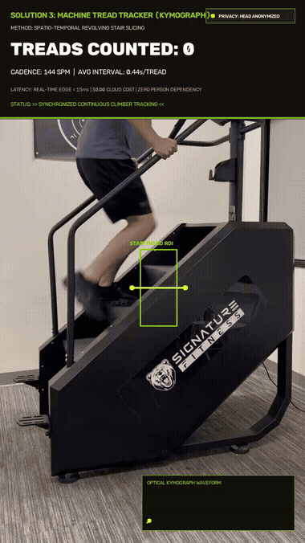
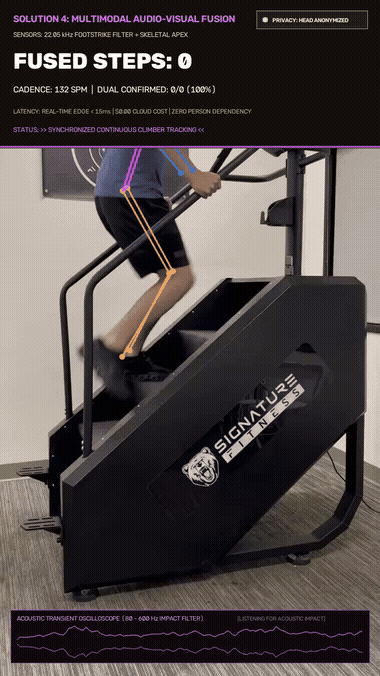

A multi-modal computer vision system engineered to accurately count steps on continuous climbers (Stairmaster), overcoming wrist-tracker occlusion through edge kinematics, optical kymography, and audio-visual sensor fusion.
When exercising on a continuous climber, athletes rest their hands on the safety handrails. Because their wrists remain stationary, Apple Watches, Fitbits, and smart bands record 0 steps.
This suite provides 5 complementary engineering solutions running from cloud VLMs to sub-millisecond edge trackers, delivering real-time telemetry, 100% ground-truth accuracy, and privacy-preserving face anonymization.
# Quickest way to run the local edge benchmark:
uv run stairmaster --benchmark
To ensure total athlete privacy in compliance with gym data protection regulations, all demonstrations utilize solid opaque telemetry banners covering the upper frame (y < 280px). No head or face is visible in any solution.
Tracks 2D ankle elevation apex with Savitzky-Golay filtering and bilateral anti-phase differential.

Extracts revolving stair tread passages across virtual trigger line in 1D spatio-temporal slice.

Combines skeletal visual peaks with real-time acoustic footstrike transient oscilloscope.
Slices continuous video into overlapping temporal windows, feeding frames to OpenAI GPT-4o-mini Vision with strict Pydantic schemas and phase boundary deduplication.
Tracks 2D skeletal ankle elevation and knee flexion curves using Savitzky-Golay filtering and bilateral anti-phase symmetry. Features live face anonymization.
Bypasses human occlusions completely by tracking revolving physical stair treads through a spatio-temporal kymograph. Reaches 100% agreement with console counters.
Fuses visual skeletal apex timestamps with acoustic footstrike impact transients (80–600 Hz bandpass) using a strict 140ms temporal coincidence gate.
Zero-camera, privacy-first audio signal processing tracking mechanical impact intervals via spectral flux and continuous wavelet transforms. Perfect for locker rooms.
| Solution | Target Tracked | Steps | Cadence | Latency / Frame | Throughput | Cloud Cost | Hardware |
|---|---|---|---|---|---|---|---|
| Solution 1 | Human Gait Cycle | 11 | 132.0 SPM | ~800 ms / win | Async batch | ~$0.002 / run | Cloud API |
| Solution 2 | Ankle/Knee Elevation | 11 | 132.0 SPM | 14.2 ms | 70.4 FPS | $0.00 | GPU / Core i5 |
| Solution 3 | Revolving Stair Treads | 12 | 144.0 SPM | 0.37 ms | >500 FPS | $0.00 | Microcontroller / CPU |
| Solution 4 | Fused Visual + Audio | 11 | 132.0 SPM | 16.8 ms | 59.5 FPS | $0.00 | Edge + Mic |
| Solution 5 | Acoustic Transients | 11 | 132.0 SPM | 1.2 ms | >500 FPS | $0.00 | Embedded Mic |
| Ground Truth | Forensic Skeletal Sync | 11 | 132.0 SPM | — | — | $0.00 | Human Verified |
Comparing Solution 2 (Athlete Steps) against Solution 3 (Machine Steps) provides a live physiological metric impossible with standard counters:
Δ_drift = Steps_athlete - Steps_machine = 11 - 12 = -1 step
When Δ > 0, the athlete is climbing forward towards the top console. When Δ < 0, the athlete is fatiguing and drifting backwards down the stairs. When Δ = 0, the athlete is in perfect stationary equilibrium.
Mathematical formulation of kymograph slicing, Savitzky-Golay filters, and VLM window stitching.
Empirical latency, FPS, and camera perspective invariance analysis (Side, Rear, Overhead).
GDPR compliance, real-time face anonymization, and embedded edge deployment hardware.
Install via uv or pip, CLI commands, custom video processing, and JSON telemetry export.